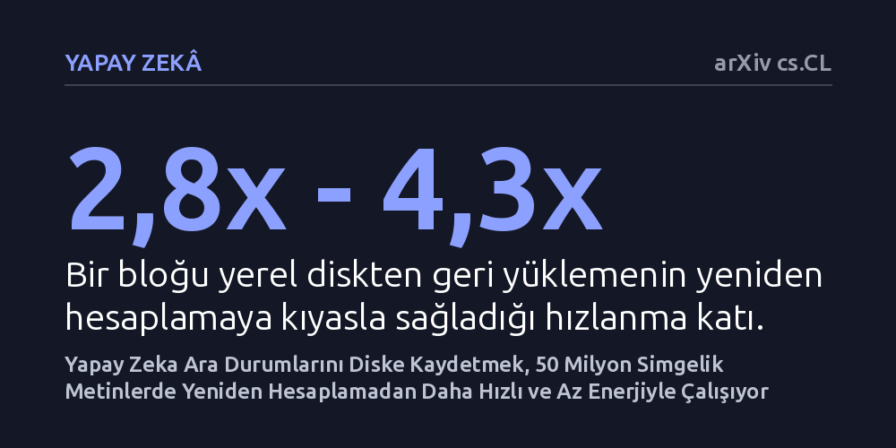

YAPAY-ZEKA · arXiv cs.CL · 2026-10-10
Araştırmacılar, dil modellerinin geçmiş hesaplamalarını baştan yapmak yerine yerel diske kaydedip yükleyen bir bellek katmanını 50 milyon simgelik metinle test etti. Sistem, verileri yeniden hesaplamaya göre 4 kata kadar daha hızlı ve 12 kata kadar daha az GPU enerjisiyle getirdi.
Yapay zekanın devasa metinleri hatırlaması için her sorguda her şeyi baştan işlemesi gerekmediğini, saklanan ara durumları yüklemenin çok daha ucuz ve pratik bir hafıza sağlayabileceğini gösteriyor.

Büyük dil modelleri yalnızca kendi anlık bağlam pencerelerine sığabilen metinleri doğrudan işleyebilir. Milyonlarca kelimelik kitaplar, arşivler ya da uzun sohbet geçmişleri söz konusu olduğunda, model bu bilgileri belleğinde sürekli canlı tutamaz. Kullanıcı geçmişe dair bir soru sorduğunda, geleneksel sistemler verilen metin için kendi dahili anahtar-değer durumlarını en baştan tekrar hesaplar.
Bu baştan hesaplama süreci devasa bir işlem gücü, zaman ve enerji tüketimine yol açar. Yapay zekanın dikkat penceresini doğrudan genişletmek ise grafik kartı belleğini hızla tüketerek sistemi tıkar. Araştırmanın odaklandığı temel soru, geçmişte hesaplanmış durumları yerel bir sabit sürücüye kaydedip ihtiyaç duyulduğunda sıfırdan hesap yapmadan hızlıca geri yüklemenin mümkün olup olmadığıdır.
Araştırmacı Sietse Schelpe, bu soruyu test etmek amacıyla 'galahad-kv' adlı açık kaynaklı bellek katmanı paketini inceledi. Yöntem, yaklaşık 16.000 simgeden oluşan metin bloklarının anahtar-değer (KV) durumlarını şifreli yerel NVMe diske kaydediyor ve daha sonra bu durumları bayt düzeyinde kusursuz biçimde, yeniden hesaplamaya gerek kalmadan geri yüklüyor.
Deney, tek bir NVIDIA H100 grafik işlemcisi üzerinde vLLM servis altyapısı kullanılarak gerçekleştirildi. Toplamda 50 milyon simgeden oluşan gerçek kamuya açık metin akışı boyunca Google'ın Gemma 4 ailesinden 12 milyar (12B) ve 31 milyar (31B) parametreli iki modeli koşturuldu.
Protokol, uzun bağlam testlerini yanıltmaya yönelik yaygın hilelere dirençli olacak şekilde tasarlandı. Metin akışının 0 ile 50 milyon simge arasındaki farklı derinliklerine belirli bilgiler yerleştirildi ve modellerin bu bilgileri hatırlama başarısı, geri yükleme süresi ve enerji harcaması sistematik olarak kaydedildi.
Elde edilen sonuçlar, yerel diske kaydedilen blokların her seferinde başarıyla geri getirilebildiğini gösterdi. Sıfırdan 50 milyon simgeye kadar olan tüm derinliklerde test edilen 100 bloğun tamamı (100'de 100), her iki modelde de yeniden hesaplama yapılmadan şifreli depolama alanından yüklendi.
Bir bloğu NVMe diskten geri yüklemek, grafik işlemcide baştan hesaplamaya kıyasla 2,8 ile 4,3 kat daha hızlı tamamlandı. Enerji tarafında ise 8,8 ile 12,3 kat daha az GPU enerjisi harcandı. Üstelik grafik kartının bellek kullanımı, 50 milyon simgelik tüm akış boyunca tamamen sabit kaldı.
Milyonlarca simge geriye yerleştirilen olgular sorulduğunda, 12B modeli 100 sorudan 82'sine, 31B modeli ise 98'ine doğru cevap verdi. Çalışmada özellikle vurgulanan bir diğer bulgu ise her iki modelin de bilmediği durumlar karşısında uydurma cevap (halüsinasyon) üretmemesi oldu.
Bu bulgular, yapay zekaya uzun vadeli hafıza kazandırmak için her şeyi anlık işlem penceresinde tutmanın zorunlu olmadığını kanıtlıyor. Önceden hesaplanmış durumları hızlı disklerde depolamak, devasa modelleri ekonomik ve uygulanabilir kılabilir. Ancak yöntemin belirgin sınırları bulunuyor. Bu yaklaşım modelin anlık dikkat penceresini büyütmüyor; hafızadan aynı anda yalnızca tek bir blok yükleniyor ve sorunun ne kadar iyi yanıtlandığı modelin kendi kapasitesine bağlı kalıyor.
Ayrıca hafızayı diske ilk kez yazmak tek seferlik bir maliyet getiriyor ve veriler yerel diskte terabaytlarca yer kaplıyor. Hakem denetiminden geçmemiş bir önbaskı olan bu çalışmanın, farklı donanımlarda ve bağımsız ekiplerce doğrulanması gerekiyor.